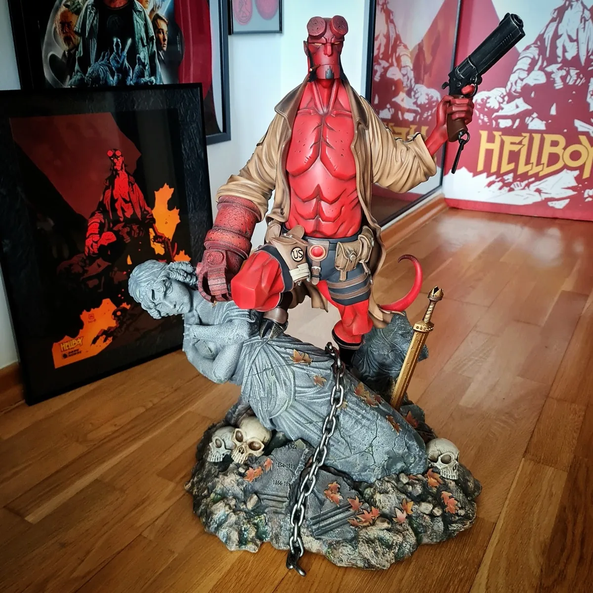

Statues · Museum exhibit
Hellboy — ACME Studios Version A Statue
ACME Studios’ quarter-scale Hellboy gives the comic character a substantial presence in cold-cast porcelain. Version A belongs to a small numbered production, preserving the design as a display sculpture rather than an articulated figure.
- Manufacturer
- ACME Studios
- Character
- Hellboy
- Variant
- Version A
- Scale
- 1:4
- Material
- Cold-cast porcelain
- Edition
- 388 pieces